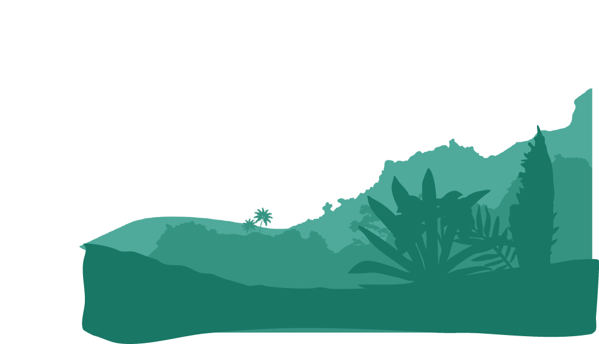
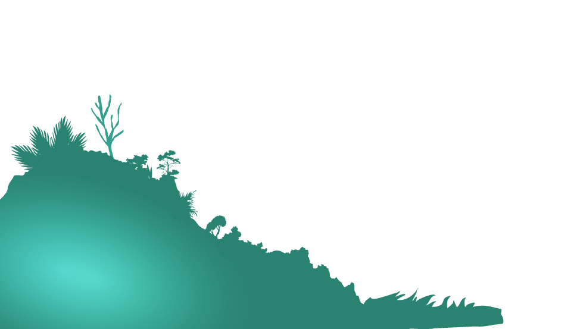
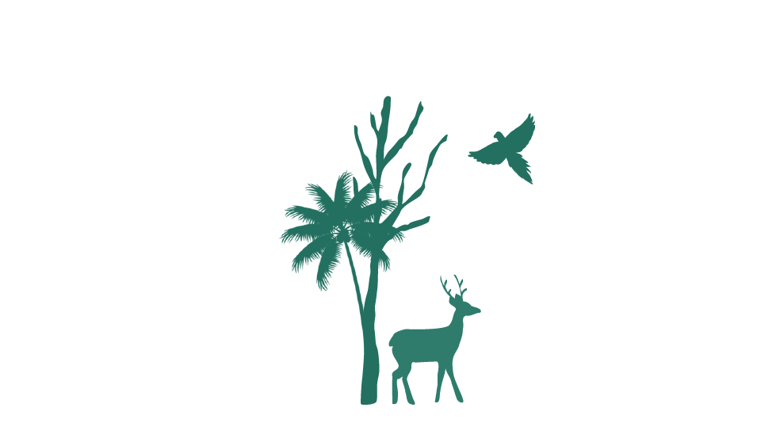
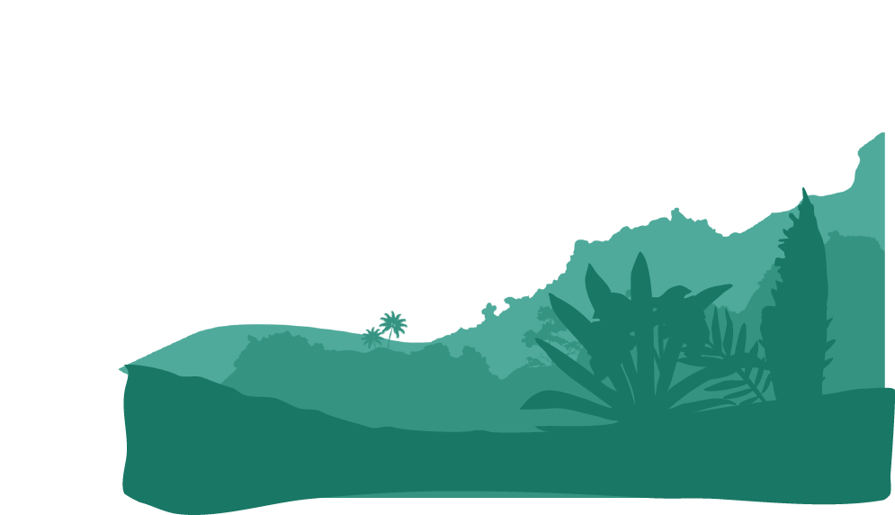
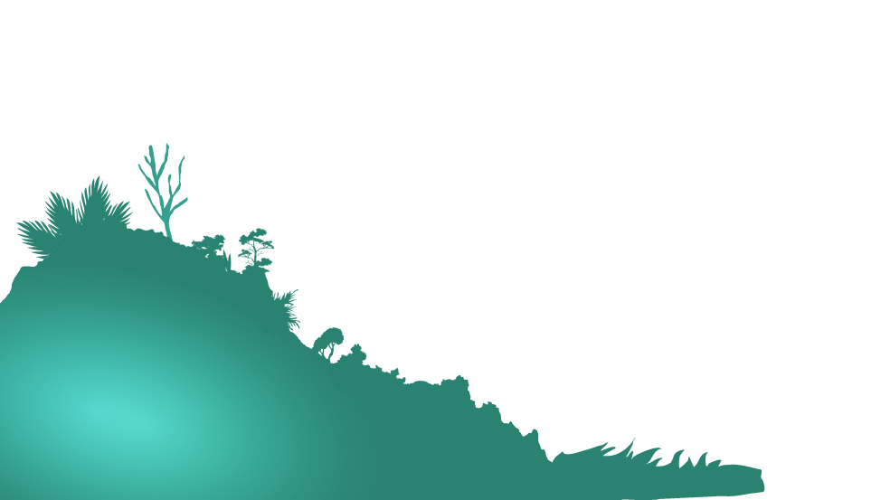
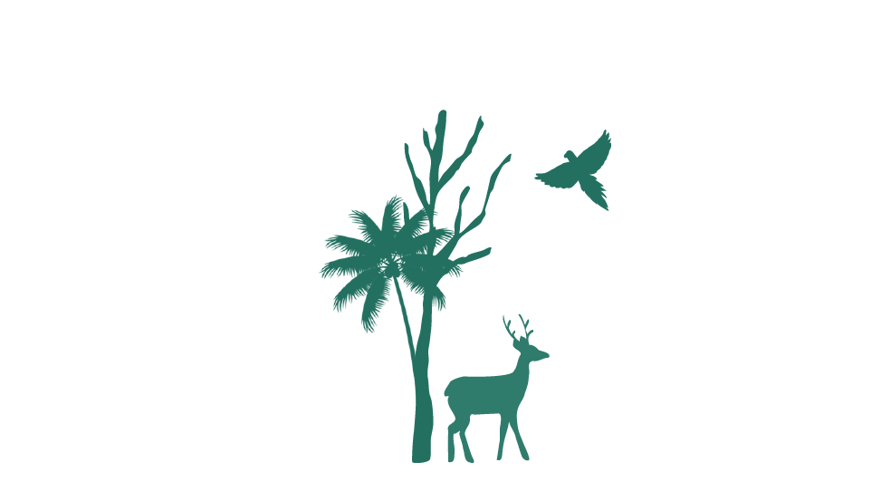
Parallax Forest
 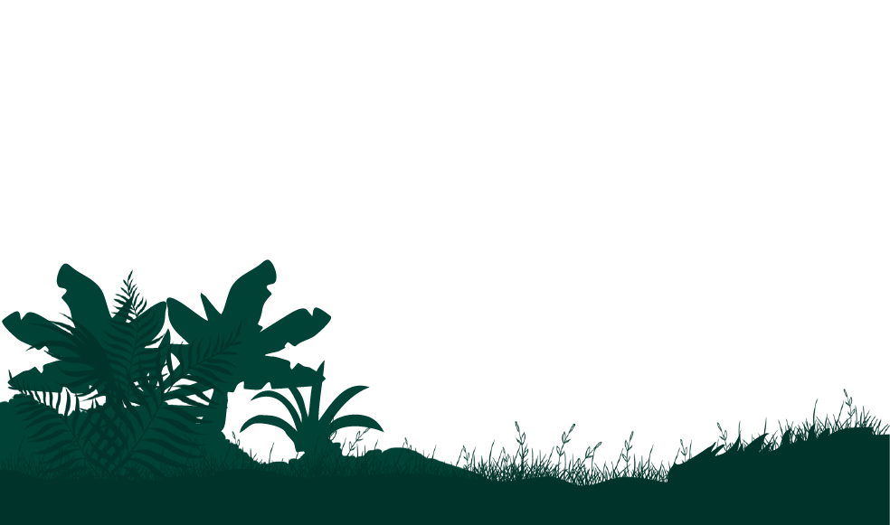
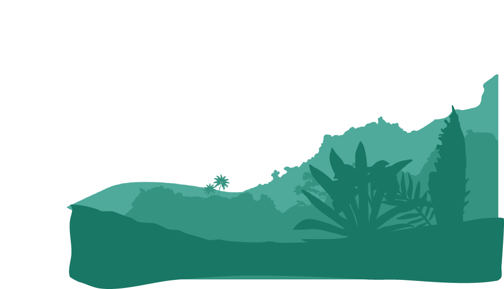
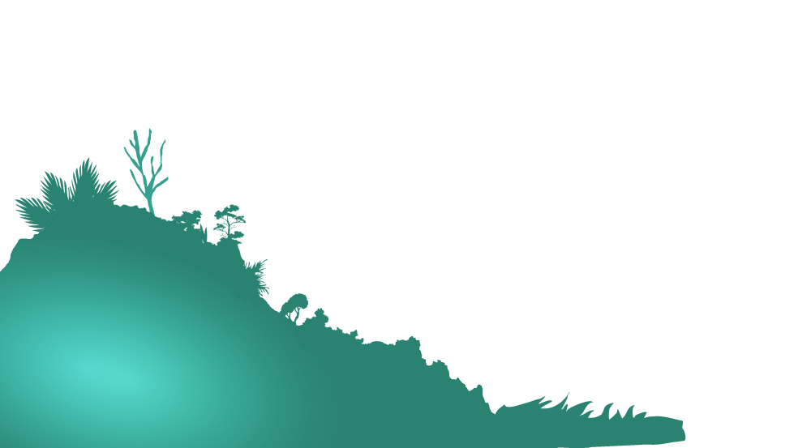
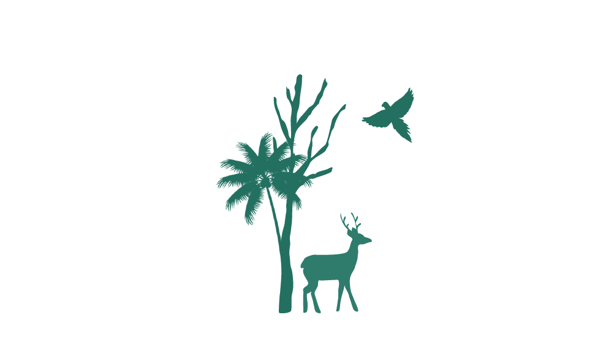
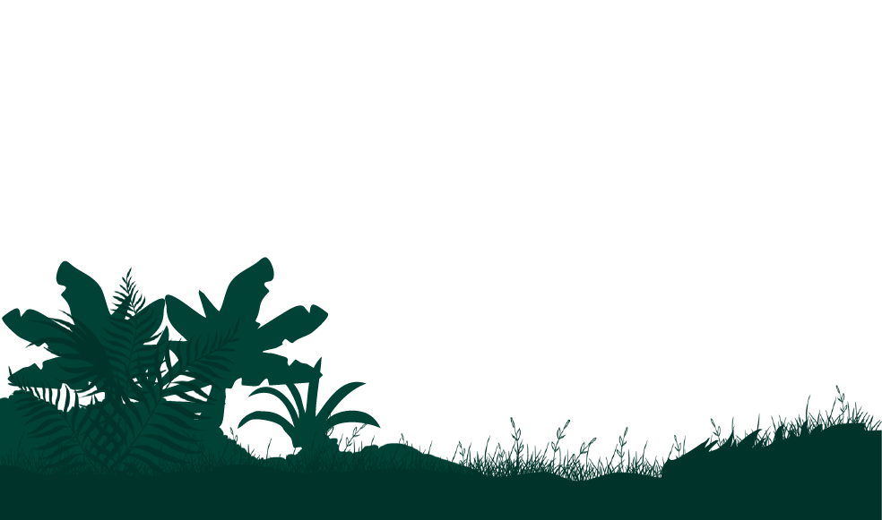
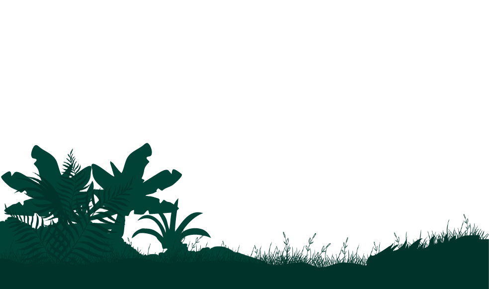
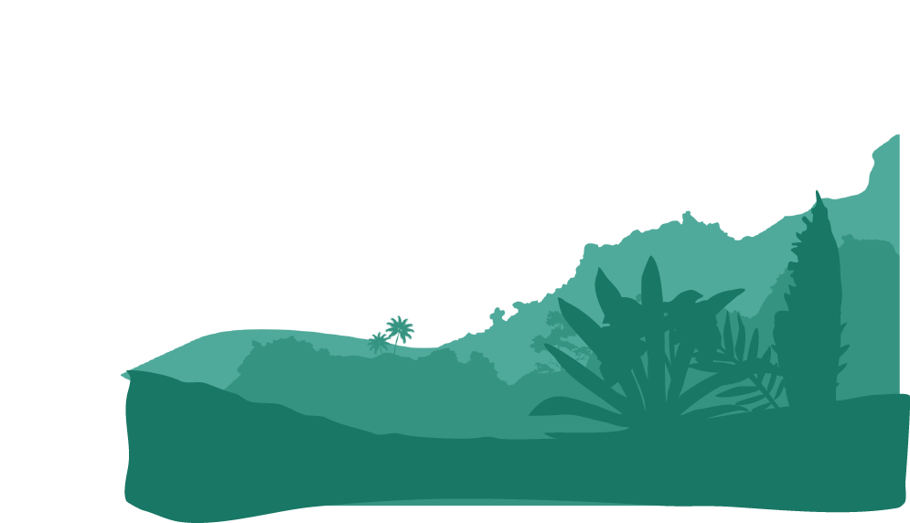
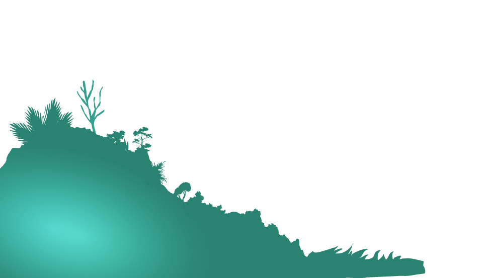
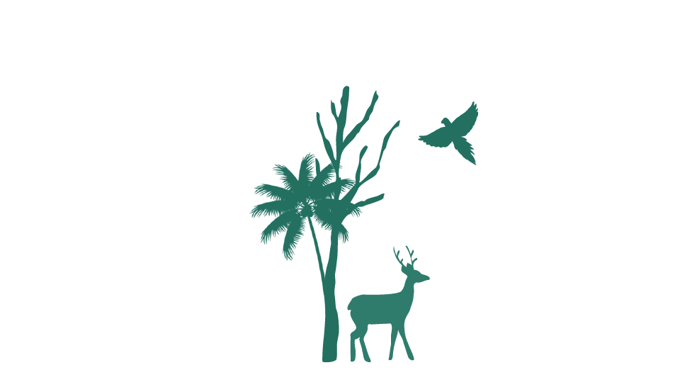
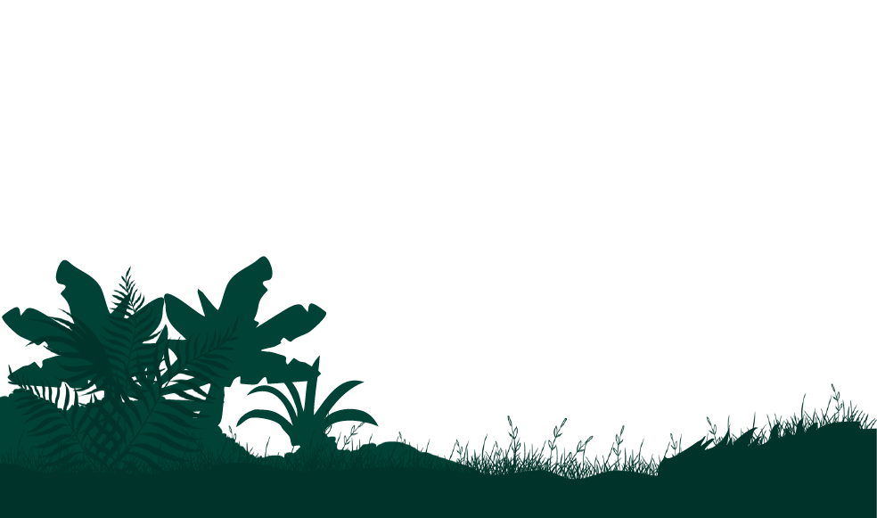
A parallax website designed to showcase a forest can create an
extraordinarily captivating visual experience by employing multiple
layers of images that move at varying speeds as the user scrolls,
producing a mesmerizing illusion of depth and immersion; this technique
can transform the digital journey into an almost tangible adventure
through a verdant, serene woodland where towering trees seem to sway
gently in the breeze, the lush undergrowth appears to stretch out
infinitely, beams of sunlight filter through the canopy casting dynamic
patterns of light and shadow, and the subtle sounds of rustling leaves
and distant bird calls enhance the atmosphere, making users feel as
though they are wandering through a tranquil, enchanted forest, fully
enveloped in the natural beauty and tranquility of the scene.
A parallax website designed to showcase a forest, set against the
backdrop of a global crisis, can create an extraordinarily captivating
visual experience by employing multiple layers of images that move at
varying speeds as the user scrolls, producing a mesmerizing illusion of
depth and immersion. This technique can transform the digital journey
into an almost tangible adventure through a verdant, serene woodland,
where towering trees seem to sway gently in the breeze, the lush
undergrowth appears to stretch out infinitely, and beams of sunlight
filter through the canopy, casting dynamic patterns of light and shadow.
However, this idyllic scene starkly contrasts with the realities of a
global crisis, such as climate change or deforestation, which profoundly
affect forests worldwide. The warming temperatures and changing weather
patterns disrupt the delicate ecosystems, threatening the survival of
countless plant and animal species.
Deforestation driven by logging, agriculture, and urban expansion
accelerates the loss of vital habitats and the depletion of
biodiversity. These global challenges lead to an increase in forest
fires, pest infestations, and diseases, further exacerbating the
fragility of these ecosystems. The subtle sounds of rustling leaves and
distant bird calls on the website might be overshadowed by the alarming
statistics of forest loss and degradation. As users navigate through
this digitally rendered forest, they are reminded of the pressing need
for sustainable practices and conservation efforts to preserve these
natural sanctuaries. This immersive experience can evoke a profound
sense of urgency and responsibility, highlighting the critical role
forests play in regulating the Earth's climate, supporting biodiversity,
and providing essential resources and services for human well-being,
ultimately calling for collective action to mitigate the impacts of the
global crisis on our precious woodlands.